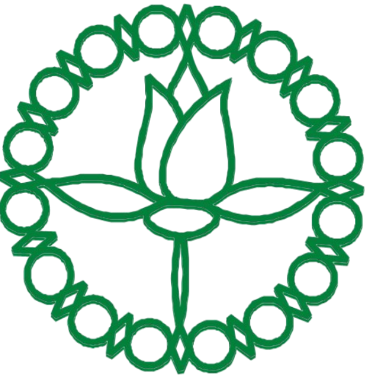
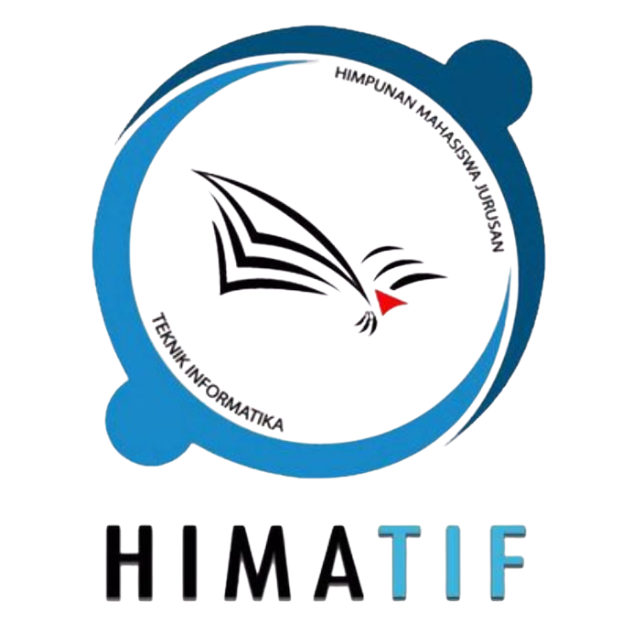

Organizations

PPI 2020
Purna Paskibraka Kabupaten Pasaman adalah organisasi luar sekolah pertama yang saya ikuti. Saat dipercaya sebagai sekretaris, saya banyak belajar tentang surat-menyurat, administrasi organisasi, serta pentingnya komunikasi formal. Pengalaman ini melatih saya menjadi pribadi yang lebih tertib, bertanggung jawab, dan teliti dalam setiap tugas yang diberikan.
read more....
HIMATIF
[DEPARTEMEN FORENSIK]
Departemen Forensik HIMATIF merupakan divisi pertama yang saya ikuti saat mulai kuliah. Di sini saya belajar banyak hal, mulai dari cara berunding, memahami dinamika organisasi mahasiswa, hingga membangun relasi dengan berbagai pihak. Saya juga dilatih untuk berpikir kritis, menyuarakan aspirasi mahasiswa, serta aktif membantu rekan-rekan dalam menyelesaikan permasalahan internal kampus. Pengalaman ini memperkuat kemampuan komunikasi, empati, dan strategi dalam berorganisasi
read more....HIMATIF
[DEPARTEMEN INRISTEK]
Melalui Divisi Inristek HIMATIF, saya belajar bahwa proses belajar tidak hanya terbatas di ruang perkuliahan, tetapi juga tumbuh melalui organisasi. Di divisi ini, saya terlibat dalam berbagai kegiatan yang mendorong pengembangan intelektual, riset, dan teknologi. Pengalaman ini membuka wawasan saya tentang pentingnya kolaborasi, berpikir kritis, serta bagaimana mengintegrasikan ilmu yang dipelajari di kelas dengan penerapannya di dunia nyata.
read more....